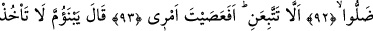

EMRİME ÂSÎ Mİ
OLDUN?
90. Hakikaten Hârun, onlara daha önce: “Ey kavmim, siz bunun yüzünden
sadece fitneye uğradınız. Sizin Rabbiniz şüphesiz çok merhametli olan Allah’tır. Şu
halde bana uyun ve emrime itaat edin.” demişti.
91. Onlar: “Biz, Mûsâ aramıza dönünceye kadar buna tapmaktan asla
vazgeçmeyeceğiz!” dediler.
92. (Mûsâ, döndüğünde) Dedi ki: “Ey Hârun, bunların dalâlete düştüklerini
gördüğün vakit seni engelleyen ne oldu.
93. (Neden) benim yolumu takip etmedin? Emrime âsi mi oldun?”
94. (Hârun:) “Ey annemin oğlu, saçımı sakalımı, yolma! Ben, senin:
‘İsrailoğullarının arasına ayrılık düşürdün; sözümü tutmadın!’ demenden
korktum.” dedi.
“Hakikaten Hârun, onlara daha önce:” Allâh’a yemin olsun ki Mûsâ Tûr-ı Sîna’dan
dönmeden önce Hârun onlara nasihat etmiş, buzağıya tapmakta direnirlerse işin ne
raddeye varacağını bildirmişti. Âyette değinilen şu sözlerle onlara seslenmişti: “Ey
kavmim, siz bunun yüzünden sadece fitneye uğradınız.” Yani, buzağı heykeli sebebiyle
fitneye düşürüldünüz ve onunla saptırıldınız. Bu ifâdenin mânâsı, ‘Siz başkasıyla değil,
sâdece buzağı ile fitneye uğradınız/imtihan edildiniz’ şeklinde değildir. ‘Size yapılan
ancak bir fitne ve imtihandır. Hakk’a irşâd değildir’ anlamındadır.
“Sizin” ibâdete yegane layık olan “Rabbiniz şüphesiz çok merhametli olan
Allah’tır.” Size her türlü nimetleri veren Allah’tır, buzağı heykeli değil. Yaptıklarına
pişman olup Allâh’a yöneldikleri taktirde tevbelerinin kabul olunacağını hatırlatmak
üzere Burada Allâh’ın Rahmân olduğu onlara özellikle hatırlatılmıştır.
Hârun (a.s.): “Şu halde” durum bundan ibâret olduğuna göre hak dinde sebat
konusunda “bana uyun ve emrime itaat edin.” Durumunu öğrendiğiniz buzağıya